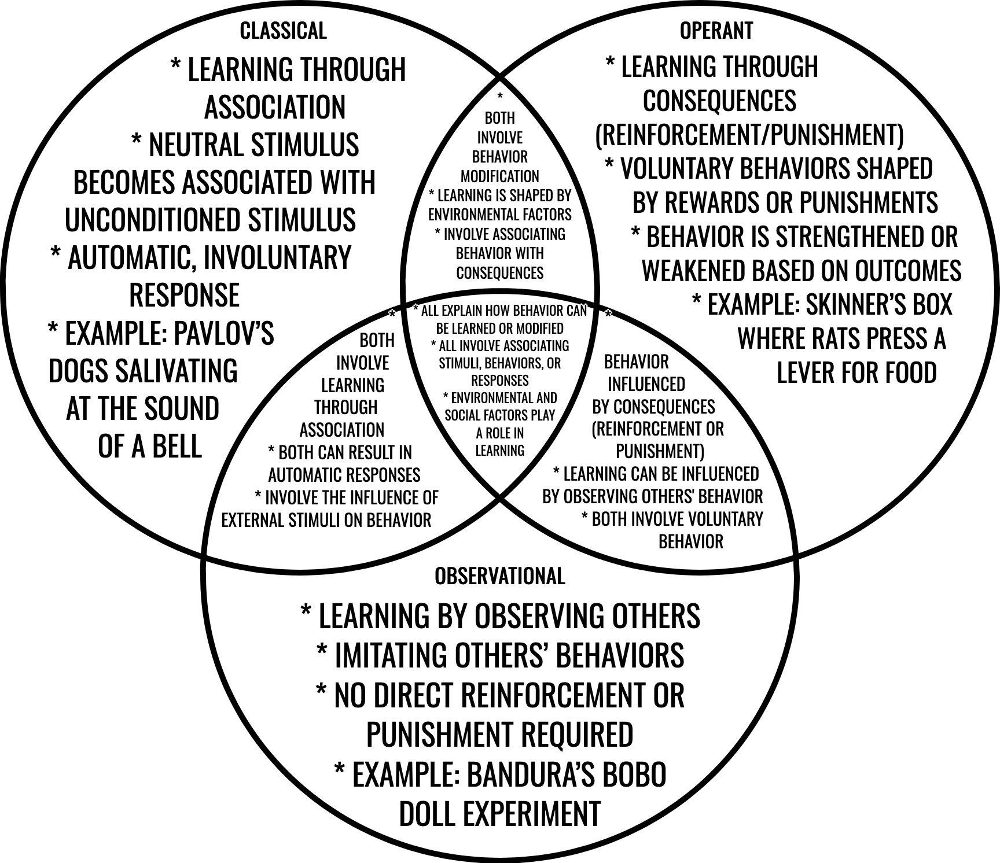

Psychology is honestly one of the coolest subjects to explore because it helps us understand everything about how people think, feel, and act. It's like diving into the mind and figuring out what makes us tick. In this 3-week project, we're going to tackle a few key topics in psychology: lifespan development, learning theories, memory, and intelligence. We'll dig into the big questions and find out how these topics show up in everyday life. Plus, I get to present my findings in a special way through website building!
Let's get into the key questions we'll be exploring during this project. These are the questions that guide our research and thinking:
How Does Lifespan Development Affect Behavior?
The first question is about how growing up and getting older affects the way we act and interact with others. Lifespan development looks at all the stages of life, from childhood to old age, and how each stage brings its own challenges and experiences that shape who we are.
As we grow, our behavior changes in response to our experiences, relationships, and priorities. Here's how it looks at different stages:
- Childhood: We learn how to interact with others by playing with friends and learning social rules.
- Adolescence: This is the time for figuring out who we are. Peer pressure, school, and even our first job can all shape how we behave.
- Adulthood: As we get older, we deal with new responsibilities, like work and family. Our social interactions change a lot.
- Aging: Older adults often become more reflective about life and tend to value relationships and experiences more than material things.
Basically, as we grow up, we change—our behavior, the way we interact with others, and how we see the world around us. It's a process that happens throughout life.
The Different Ways We Learn
Another big question we need to dive into is how we learn: What are the methods of conditioning, and how do learning theories explain these methods?
Learning isn't just something that happens in school—it's happening all the time, whether we realize it or not. There are a few well-known ways we learn: through classical conditioning, operant conditioning, and observational learning.
- Classical Conditioning: This is learning by association. A classic example is Pavlov's experiment with dogs. He rang a bell every time he fed them, and eventually, the dogs started salivating just at the sound of the bell (even before the food came). This kind of learning happens all around us, like when you hear a song and immediately think of a specific memory.
- Operant Conditioning: This is learning through rewards and punishments. If you do something that gets you a reward (like a treat or praise), you're more likely to do it again. On the flip side, if you get punished for doing something, you'll probably avoid doing it in the future. Think of training a dog: they learn to sit when they get a treat.
- Observational Learning: We can also learn by watching others. This is the basis of social learning theory by Albert Bandura. For example, kids often learn behaviors like how to talk, walk, or even how to behave in certain situations just by watching their parents or peers.
These learning theories help us understand everything from how babies learn to talk to how we get better at sports or schoolwork. It's pretty wild how much we can learn just by observing others or experiencing rewards and punishments!
What's Going On Inside Our Heads (Biologically) When We Remember Stuff?
Moving on to memory, let's explore another question: What biological processes and disorders are related to memory? Basically, what happens in our brains when we remember something, and what happens when memory goes wrong?
Memory isn't just some magic trick our brain does. There are actual biological processes involved. Here are a few:
- Synaptic Plasticity: This is the brain's ability to strengthen or weaken connections between neurons based on experience. It's how we can form and store memories.
- Long-Term Potentiation: This is when repeated stimulation makes the connection between two neurons stronger, helping us retain memories more effectively.
- Memory Consolidation: This is when short-term memories are turned into long-term memories.
However, things don't always go smoothly. Some disorders mess with memory, like:
- Alzheimer's Disease: A disease that causes memory loss and confusion, usually in older adults.
- Post-Traumatic Stress Disorder (PTSD): When people experience trauma, they might struggle with recalling or processing those memories properly.
- Dementia: A condition where people lose memory and cognitive abilities as they get older.
Memory is a complicated process in the brain, and it's pretty fragile. So it's no surprise that when something goes wrong, it can have a huge impact on people's lives.
What Does "Intelligence" Really Mean?
Finally, let's tackle the big question about intelligence: How have measures and perceptions of intelligence changed over time? What we think of as “intelligent” has changed a lot over the years.
A long time ago, intelligence was seen as something you're just born with—like a fixed thing. But now, people realize that intelligence is a lot more complex than just an IQ number. In fact, Howard Gardner's theory of multiple intelligences suggests that there are actually several different kinds of intelligence. Here's a quick list of them:
- Linguistic: The ability to use language effectively.
- Logical-Mathematical: The ability to reason logically and solve math problems.
- Spatial: The ability to think in three dimensions (like architects or artists).
- Bodily-Kinesthetic: The ability to use your body effectively (think athletes or dancers).
- Musical: The ability to create, appreciate, and perform music.
- Interpersonal: The ability to understand and relate to other people.
- Intrapersonal: The ability to understand yourself and your own emotions.
- Naturalistic: The ability to understand the natural world (like biologists or environmentalists).
Today, intelligence is viewed as a combination of many different abilities, not just a number on a test. Some newer ideas include things like emotional intelligence (how well we understand and manage emotions) and cultural intelligence (how we interact with people from different cultures).
So, as we can see, the way we think about intelligence has evolved a lot. It's no longer just about who's the smartest on a test. It's about recognizing and developing all kinds of talents and abilities!
Week 1: Benchmark 1 - Lifespan Development and Human Behavior
Objective: Explain how lifespan development influences behavior and interactions.
Research Tasks:
- Investigate the stages of human development: childhood, adolescence, adulthood, and aging.
- Explore how each stage influences behavior and social interactions.
Childhood (0-12)
This stage is all about crazy growth - physically, cognitively, and emotionally. Kids are learning how to talk, get around, and start making sense of their relationships with others.
Socially, most interactions are with family and peers. Kids at this stage are kind of egocentric but slowly start to get the hang of empathy and cooperation as they grow up.
Example from MY LIFE:
So, as a kid, I was pretty rowdy - like, ADHD-level hyperactive. Honestly, I could never sit still, which made school a nightmare. My grades were terrible, and I needed extra help like an IEP. I barely tried to make friends, so I spent most of my elementary years pretty lonely. But I was active - did soccer at the start - and would always break the new toys I got, like, for no reason. And I had this impulse control issue where if I thought of something random (like breaking a toy car), I'd just go with it.
Things got worse when I started hoarding food at the cafeteria. Yeah, that's right - I started to gain a ton of weight. The ADHD meds didn't really help either, no matter how many patches or pills I tried. My parents struggled with it, but I don't think they ever really understood what was going on. And, honestly, I didn't either.
But then, just before my last year of elementary school, something flipped. Out of nowhere, I just stopped being a problem. My behavior changed, and I started getting better grades. I made friends, barely got into trouble, and I stopped needing all the meds. Like, I just figured it out. I know it sounds crazy, but that's how it happened. I felt like a new person. And here I am, doing much better now.
In summary: I wasn't the easiest kid to raise, but my parents made sure I was taken care of. They were always there for me. But I still struggled with socializing, which followed me into middle school. I started with no friends, a bad rep, and I felt like I missed out on so much. Still, it got better over time. So, what did I learn from Erik Erikson's stages?
- Basic Trust vs. Mistrust: I trusted my parents completely, and they trusted me to sort things out. That trust made me feel like I could handle things with their support.
- Autonomy vs. Shame/Doubt: Honestly, I didn't have much control over my actions as a kid. Even when I knew what I was doing was wrong (like stealing from the Scholastic book fair), I'd just do it. I never thought about consequences.
- Initiative vs. Guilt: I never took any initiative. I was always doing my own thing, ignoring instructions. Getting in trouble didn't bother me much either - I'd just apologize and move on.
- Industry vs. Inferiority: I thought I was the best at everything, even when I wasn't. I remember trying to impress some kids by throwing a rock - and hitting a car. Total fail. But I didn't feel inferior. I was too busy thinking I was amazing.
Adolescence (13-19)
Adolescence is when things start to change big time. It's all about finding your independence, figuring out who you are, and a ton of emotional ups and downs.
In my case, after I graduated elementary school, I had this weird “snap” in my personality. I just changed from being that chaotic kid into someone who cared more about school and had a better attitude. Middle school was a huge improvement. My grades were better, I made friends, and I finally understood how to handle schoolwork. I stopped doing all the stuff that got me into trouble in elementary school. It was like the switch flipped.
Still, high school wasn't perfect. Freshman year was tough because I didn't care much about getting good grades. But by sophomore year, everything fell into place. I learned to focus and control my actions. I turned into a much more normal, “average” student. That was honestly a huge win for me.
In summary: I regained a lot of the qualities I missed during childhood. My ability to focus improved, I became less selfish, and I started caring about others more - even animals! I learned how to trust teachers and accept authority. The snap' really saved my life. Without it, I don't think I'd be where I am today.
What did I gain based on Erikson's stages during adolescence?
- Identity vs. Role Confusion: I figured out who I am. I know what I'm capable of now and where I want to go in life. Still a bit worried about the future, but not as much.
- Intimacy vs. Isolation: I'm learning to form real, meaningful relationships. As for love, I think that will come when I'm a bit older - maybe around 30.
- Generativity vs. Stagnation: I'm pretty sure I'll keep pushing to grow and make a difference, especially with my future career in programming.
Adulthood (20-64)
I can't speak from personal experience yet, but I've thought about how the next stages will likely play out for me. In adulthood, I see myself focusing on my career in IT, building relationships, and growing into a more well-rounded person.
Here's what I think I'll gain based on Erikson's stages:
- Intimacy vs. Isolation: I believe I'll have solid relationships with friends and family, but love might not come until later in life. I expect to have moments of loneliness since my job will likely keep me behind a screen a lot.
- Generativity vs. Stagnation: I want to help the next generation, whether through my career or by having a family. I also expect to achieve something big in programming - maybe even get awards for it.
Aging (65+)
Again, not speaking from experience here, but when I get older, I hope I'll look back on my life and feel good about what I've accomplished. Hopefully, I'll have a family, a career I'm proud of, and a life full of experiences.
What do I hope to gain from this stage, based on Erikson's stages?
- Ego Integrity vs. Despair: I hope I'll feel satisfied with what I've done and proud of my life. My only regret so far is how I acted as a kid, but that's something I've learned from.
Theories on Lifespan Development
There are tons of psychological theories that explain how we develop over the course of our lives. Some of the most influential ones include:
- Erik Erikson's Psychosocial Stages
- Jean Piaget's Cognitive Development
- Lev Vygotsky's Sociocultural Theory
Understanding these theories will help explain why people behave the way they do at different stages of life.
Week 2: Benchmark 2 - Learning Theories and Conditioning Methods
Objective: Evaluate the methods of conditioning and learning theories.
Research Tasks:
- Examine key learning theories, including classical conditioning, operant conditioning, and social learning theory.
- Analyze experiments and case studies that illustrate these concepts.
Classical Conditioning
Classical Conditioning is a learning process in which a neutral stimulus becomes associated with a stimulus that naturally produces a response. Over time, the neutral stimulus starts to evoke the same response on its own.
Key Figure: Ivan Pavlov (Pavlov's Dogs experiment)
In Pavlov's famous experiment, he conditioned dogs to salivate at the sound of a bell by repeatedly pairing the sound with food. Eventually, the dogs would salivate just from hearing the bell, even when there was no food present.

This concept made me think about my childhood and how I used to always rush downstairs whenever I heard the front door open. Why? Because my dad always brought food home when he came through that door. The sound of the door opening became a “trigger” for food in my mind. So, even when my dad stopped bringing food home and I heard that door, I found myself running downstairs anyway. I thought it was funny how my brain was still “conditioned” to expect food, even though it wasn't coming anymore. This is like Pavlov's experiment in real life!
Operant Conditioning
Operant Conditioning is a type of learning where behavior is controlled by consequences—either reinforcement (which strengthens the behavior) or punishment (which weakens it).
Key Figure: B.F. Skinner (Skinner's Box)
In Skinner's experiment, he placed rats in a box with a lever or button. When the rat pressed it, it would receive food. This positive reinforcement made the rat more likely to press the lever again. In this case, the behavior (pressing the lever) was strengthened by the reward (food).
For me, this concept can be related to when I used to mow the lawn for money. At first, I was all about getting paid because I wanted to buy stuff. That money was the “reinforcer” that motivated me to keep mowing. But when winter came and I couldn't mow anymore, I lost my motivation. Over time, I realized that the “reward” of money wasn't enough to keep me interested, and I stopped doing it for money. This is basically what happened in Skinner's experiment, where the reinforcement worked, but only as long as the reward was consistent.
Social Learning Theory
Social Learning Theory explains that people can learn by observing others, especially in social settings, without needing direct reinforcement or punishment. People imitate behaviors they see around them.
Key Figure: Albert Bandura (Bobo Doll Experiment)
In Bandura's experiment, children who watched an adult behave aggressively toward a Bobo doll were more likely to imitate that behavior when they were given the opportunity. This demonstrated that learning doesn't always require direct reinforcement; sometimes, simply watching someone else can be enough to shape behavior.
This theory really connects with my own experiences, especially with how I shaped my opinions about my school. When I was in freshman year, I was super into band, and I loved New Tech High School (NTHS). But then, I started hanging out with older students in band, and they would talk badly about the school. I began to imitate their negative views. I started to dislike the school too, just because the people around me did.
In sophomore year, that negative view stuck with me. I focused on band and ignored everything else at New Tech. But then something changed in junior year. I got involved with programming and started working on a project called Graspass, a new version of Echo. I realized that the school wasn't actually that bad. It was my peers' influence that made me see it negatively. Once I started thinking for myself, my perspective completely shifted. Senior year has been a breeze because I don't carry that negativity anymore. I've been able to focus better, my mood improved, and I've felt more motivated overall. I learned that sometimes you're conditioned to think a certain way just by the people you surround yourself with, but it's possible to break out of that mindset when you take a step back and see things more clearly.
Implications of These Theories in Real-World Settings
These theories aren't just limited to experiments; they happen in real life all the time. Pavlov's classical conditioning, Skinner's operant conditioning, and Bandura's social learning theory all show up in everyday situations. Whether it's teaching your dog to sit with treats (classical conditioning), rewarding kids for doing their chores (operant conditioning), or people copying what others do (social learning), these learning principles shape how we behave and learn from our environment.
Sources
- Conditioned Reflexes (Pavlov)
- The Behavior of Organisms (Skinner)
- Bandura's Bobo Doll Experiment
- Video Games & Aggressive Thoughts
Week 3: Benchmark 3 Memory and Intelligence
Objective: Explain biological processes related to memory and evaluate measures of intelligence.
Memory
Research the biological basis of memory, including brain structures involved in memory formation (e.g., hippocampus, amygdala).
Hippocampus:
Located in the medial temporal lobe, plays an important role in forming new memories, including declarative memory (memories that can be consciously recalled). Damage to the hippocampus can impair the ability to form new long-term memories, a condition often observed in patients with Alzheimer's disease.
Amygdala:
Associated with the processing of emotions and plays a role in memory, especially emotional memory. It is involved in strengthening memories that have strong emotional components.
Cerebellum and Basal Ganglia:
These structures are involved in procedural memory, which refers to the memory of skills and actions. For example, the cerebellum plays an important role in motor learning and coordination, while the basal ganglia are involved in the habit-forming process.
Prefrontal Cortex:
Involved in working memory, which is the short-term storage and manipulation of information. It allows for cognitive processes such as problem-solving, decision-making, and planning. Damage to the prefrontal cortex may result in deficits in attention, decision-making, and memory retrieval.
Common Memory Disorders
Identify common memory disorders (e.g., Alzheimer's disease, amnesia) and their psychological implications.
- Alzheimer's Disease: A neurodegenerative disorder that primarily affects memory, particularly the formation of new episodic memories. It is characterized by the progressive loss of cognitive function due to the degeneration of brain structures, notably the hippocampus.
- Amnesia: Refers to a loss of memory, which can be caused by
brain injury, disease, or psychological trauma. There are two types of amnesia:
- Anterograde Amnesia: Inability to form new memories after a traumatic event.
- Retrograde Amnesia: Loss of memories formed before the event causing the amnesia.
- Korsakoff's Syndrome: Caused by thiamine (vitamin B1) deficiency, often due to chronic alcohol abuse, Korsakoff's syndrome results in severe memory impairment. It primarily affects episodic memory and is linked to damage in the thalamus and mammillary bodies, regions that interact with the hippocampus.
- Post-Traumatic Stress Disorder (PTSD): Can affect memory in relation to traumatic events. The amygdala becomes hyperactive in individuals with PTSD, which may cause intrusive memories, flashbacks, or difficulty distinguishing between past and present experiences.
Intelligence
Investigate different measures of intelligence, including IQ tests, Gardner's theory of multiple intelligences, and cultural perspectives on intelligence.
Measures of Intelligence
- IQ Tests (Intelligence Quotient): IQ tests are among the most widely used measures of intelligence. They aim to quantify cognitive abilities through standardized testing. These tests typically measure skills like logical reasoning, mathematical ability, language comprehension, and spatial visualization.
- Gardner's Theory of Multiple Intelligences: Howard Gardner
proposed that intelligence is not a single entity but rather a set of distinct independent
abilities. His theory includes at least eight types of intelligences:
- Linguistic
- Logical-mathematical
- Spatial
- Musical
- Bodily-kinesthetic
- Interpersonal
- Intrapersonal
- Naturalistic
- Cultural Perspectives on Intelligence: Intelligence is culturally defined and can vary across different societies. In some cultures, social intelligence—such as the ability to navigate complex social hierarchies—is highly valued, while in others, academic achievements and logical reasoning are prioritized.
Compare Historical and Contemporary Views on Intelligence
Intelligence has been seen as a single, general trait (g-factor) that determines a person's cognitive abilities. The concept of general intelligence was popularized by Charles Spearman in the early 20th century. He argued that people who perform well on one cognitive task tend to perform well on others, suggesting a general cognitive ability.
In contrast, contemporary theories such as Gardner's multiple intelligences and Sternberg's triarchic theory offer a broader view of intelligence. Sternberg's theory suggests that intelligence consists of three aspects:
- Analytical Intelligence
- Creative Intelligence
- Practical Intelligence
Societal Values and Intelligence
The way intelligence is defined and measured often reflects societal values. For instance, in an increasingly globalized world, there is a growing recognition of the value of diverse cognitive skills, such as emotional intelligence, social intelligence, and creativity. However, traditional measures like IQ tests still dominate educational and professional settings in many parts of the world, emphasizing logical reasoning and analytical thinking over other types of intelligence. This has led to debates about whether these tests truly reflect an individual's potential and capabilities.
Conclusion
Understanding memory and intelligence from both biological and psychological perspectives provides important insights into how we learn, recall information, and develop cognitive skills. Memory is not just a passive recording of events but an active process involving multiple brain regions. Intelligence, on the other hand, has evolved from a narrow definition to a broader, more inclusive concept, emphasizing not only logical reasoning but also creativity, practical skills, and emotional intelligence. As our understanding of these concepts deepens, so does our appreciation for the complexity and diversity of human cognition.